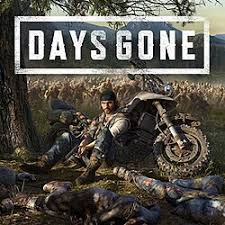
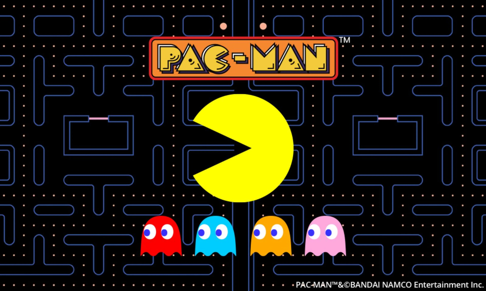

(PRESIONALOS DE NUEVO PARA QUE LA INFORMACIÓN DESAPAREZCA. LA INFORMACIÓN SE DESPLIEGA PARA ABAJO)
📰 Novedades en el mundo gaming
Las últimas noticias y actualizaciones sobre videojuegos.
🎮 Estrenos recientes y próximos lanzamientos
Este año ha estado cargado de títulos esperados y nuevas propuestas que han emocionado a la comunidad gamer. Algunos de los juegos más destacados incluyen:
Days Gone Remastered: La versión definitiva del clásico postapocalíptico con mejoras gráficas, audio 3D y nuevos modos de juego.
Fatal Fury: City of the Wolves: SNK revive su legendaria saga de lucha con un estilo visual renovado y mecánicas modernas.
Clair Obscur: Expedition 33: Un RPG de combate por turnos con una ambientación Belle Époque fantástica y un giro estratégico en tiempo real.
Steel Seed: Un juego de acción y sigilo con una historia de ciencia ficción oscura, donde los últimos humanos sobreviven bajo tierra custodiados por máquinas.
South of Midnight: Una aventura de acción en tercera persona con una ambientación mágica inspirada en el folclore sureño.
The Last of Us Part II Remastered: Finalmente disponible en PC con gráficos mejorados y contenido adicional exclusivo.
Steel Hunters: Un shooter de extracción con mecánicas battle royale y un fuerte enfoque en el juego en equipo.
Stellar Echoes: Resonance: Una aventura narrativa de ciencia ficción con exploración espacial y mecánicas musicales.

🚀 Noticias importantes en la industria
Además de los lanzamientos, hay noticias que han sacudido el mundo de los videojuegos:
Grand Theft Auto VI se retrasa: Rockstar Games anunció que el esperado GTA VI, originalmente previsto para finales de 2025, ahora se lanzará el 26 de mayo de 2026. La compañía explicó que necesitan más tiempo para garantizar la calidad del juego.
Expansión del Xbox Game Pass: Microsoft ha revelado nuevos acuerdos con desarrolladores para incluir más títulos AAA en su servicio de suscripción, lo que podría cambiar la forma en que los jugadores acceden a los juegos.
PlayStation 6 en desarrollo: Aunque Sony no ha dado detalles oficiales, rumores indican que la próxima generación de consolas podría llegar en 2027, con mejoras en rendimiento y compatibilidad con juegos anteriores.
Nintendo Switch 2 en camino: Se espera que Nintendo anuncie su nueva consola híbrida este año, con hardware más potente y una pantalla OLED mejorada.
🔥 Tendencias y cambios en la industria
El mundo de los videojuegos sigue evolucionando, y algunas tendencias clave están marcando el 2025:
Más juegos con inteligencia artificial: Los desarrolladores están integrando IA avanzada para mejorar la jugabilidad, crear NPCs más realistas y generar contenido dinámico.
Realidad virtual y aumentada: La VR sigue creciendo con dispositivos más accesibles y experiencias inmersivas en juegos como Half-Life: Alyx 2 y Horizon VR.
El auge de los juegos de extracción: Títulos como Steel Hunters están popularizando el género de shooters donde los jugadores deben recolectar recursos y escapar antes de ser eliminados.
Mayor enfoque en accesibilidad: Las compañías están implementando más opciones para jugadores con discapacidades, como controles adaptativos y configuraciones de accesibilidad mejoradas.
🤯 Curiosidades que quizás no sabías
Datos sorprendentes sobre el mundo de los videojuegos.
🎮 Curiosidades del mundo gamer
El récord mundial en Pac-Man: Lo tiene Billy Mitchell, quien logró una puntuación perfecta de 3,333,360 puntos sin perder una sola vida.
Polybius, el juego arcade más misterioso: Supuestamente causaba efectos psicológicos en los jugadores. Sin embargo, no se conserva ninguna copia real del juego.
Mario no siempre fue fontanero: En su primera aparición en Donkey Kong, su profesión era carpintero.
El videojuego más caro para coleccionistas:Nintendo World Championships 1990, alcanzando precios exorbitantes en subastas.
Jack el Destripador fue el primer videojuego: En ser catalogado como no apto para menores de 18 años.
El efecto Tetris: Jugar demasiado Tetris puede hacer que las personas vean patrones de bloques en la vida cotidiana.
Pac-Man no tiene un final real: Teóricamente, el juego puede jugarse indefinidamente si el jugador no comete errores.
El juego más vendido de la historia:Minecraft, con más de 200 millones de copias vendidas.
El primer videojuego de disparos:Spacewar! en 1961, desarrollado en solo 200 horas.
Halo y el número 7: En la saga Halo, el número 7 es considerado de buena suerte y aparece en varios elementos del juego.
El origen del nombre "Mario": Fue nombrado así en honor a Mario Segale, el dueño del almacén que alquilaba espacio a Nintendo of America.
Luigi fue creado por accidente: Originalmente, solo iba a ser un personaje adicional en Mario Bros, pero terminó convirtiéndose en un ícono independiente.
El primer juego musical:Simon, un juego de consola de los años 70 que se considera el pionero en videojuegos musicales.
Ermac en Mortal Kombat: Inicialmente era solo un rumor, pero terminó convirtiéndose en un personaje real dentro de la saga.
Dungeons & Dragons inspiró los RPGs: Este juego de mesa fue el pionero en el género de juegos de rol y tuvo una gran influencia en los videojuegos.

🎭 ¿Son buenos los videojuegos?
Análisis sobre los pros y contras del gaming.
🎮 Introducción
Los videojuegos han sido objeto de debate durante años. Mientras algunos los ven como una herramienta de entretenimiento y aprendizaje, otros los consideran una posible fuente de problemas. Vamos a analizar los beneficios, los efectos negativos, los estudios científicos y cómo encontrar el equilibrio perfecto.
✅ Beneficios de los videojuegos
Desarrollo cognitivo y habilidades mentales: Mejoran la capacidad de resolución de problemas, atención visual y memoria. Favorecen la toma de decisiones bajo presión.
Coordinación y habilidades motoras: Mejoran la coordinación ojo-mano, reflejos y precisión en movimientos.
Creatividad y expresión artística: Juegos como Minecraft y The Sims fomentan la creatividad y el diseño.
Interacción social y trabajo en equipo: Los juegos multijugador fomentan colaboración, comunicación y liderazgo.
Beneficios terapéuticos y educativos: Se han usado videojuegos para tratar la dislexia, rehabilitación motora y enseñanza de materias escolares.
⚠️ Efectos negativos de los videojuegos
Adicción y pérdida de control: La OMS reconoce el trastorno por videojuegos como una condición que afecta la vida diaria.
Sedentarismo y problemas físicos: Pasar muchas horas jugando puede causar obesidad, dolores musculares y fatiga visual.
Problemas sociales y aislamiento: Puede reducir la interacción cara a cara y fomentar el aislamiento.
Impacto en la salud mental: En exceso, los videojuegos pueden generar ansiedad, depresión y estrés.
Exposición a contenido inapropiado: Algunos videojuegos tienen violencia extrema o contenido no apto para menores.
📊 Estudios científicos sobre el impacto de los videojuegos
📊 Universidad de Grenoble Alpes: Videojuegos y capacidad lectora
Un estudio conjunto entre la Universidad de Grenoble Alpes (Francia) y el Basque Center on Cognition, Brain and Language (BCBL) analizó cómo los videojuegos de acción pueden mejorar la capacidad lectora y la atención visual.
📌 Metodología del estudio
Se dividieron 36 adultos en dos grupos:
🎮 Jugadores habituales de videojuegos de acción.
🧑🏫 Personas que no suelen jugar este tipo de juegos.
Se realizaron pruebas de lectura y atención visual.
Los jugadores de videojuegos de acción obtuvieron mejores resultados en la capacidad lectora y la atención visual.
✅ Conclusiones
Los videojuegos de acción pueden mejorar la capacidad de lectura al entrenar la atención visual.
Se sugiere que los videojuegos podrían ayudar a tratar la dislexia en el futuro.
Los resultados fueron publicados en la revista Scientific Reports.
🧠 Universidad de California: Videojuegos y ambliopía (ojo vago)
Investigadores de la Universidad de California, Berkeley realizaron un estudio sobre el impacto de los videojuegos en el tratamiento de la ambliopía (ojo vago).
📌 Metodología del estudio
Se combinó el tratamiento oftalmológico convencional con videojuegos.
Se aplicó un tratamiento de oclusión del ojo sano junto con videojuegos de acción y estrategia.
Después de 40 horas de juego, la agudeza visual mejoró un 30%.
✅ Conclusiones
Los videojuegos pueden ser una herramienta efectiva para mejorar la visión en adultos con ambliopía.
Se observó una mejora más rápida en comparación con los tratamientos tradicionales.
Se sugiere que los videojuegos podrían ser utilizados en terapias visuales en el futuro.
⚠️ Organización Mundial de la Salud (OMS): Adicción a los videojuegos
La OMS incluyó la adicción a los videojuegos como un trastorno de salud mental en su Clasificación Internacional de Enfermedades (ICD-11).
📌 Criterios para el diagnóstico
🔹 Prioridad del juego sobre otras actividades (familia, trabajo, estudios).
🔹 Pérdida de control sobre el tiempo de juego, incluso cuando hay consecuencias negativas.
🔹 Deterioro significativo en la vida personal, social y laboral durante al menos un año.
✅ Impacto del reconocimiento
La OMS busca mejorar las estadísticas sobre adicción a los videojuegos.
Se han propuesto tratamientos especializados para personas con este trastorno.
La industria de los videojuegos ha debatido sobre la validez de esta clasificación.
🎮 Videojuegos en la educación: Enseñanza de conceptos complejos
Investigaciones han analizado cómo los videojuegos pueden ser una herramienta efectiva en la educación.
📌 Beneficios en el aprendizaje
Los videojuegos pueden ayudar a enseñar conceptos complejos de manera interactiva.
Se han utilizado en matemáticas, historia, ciencias y habilidades cognitivas.
Los "serious games" han sido diseñados específicamente para la educación.
✅ Ejemplos de videojuegos educativos
Minecraft Education Edition → Enseña programación, arquitectura y resolución de problemas.
Assassin’s Creed Discovery Tour → Permite explorar la historia de Egipto y Grecia de manera interactiva.
Kerbal Space Program → Introduce conceptos de física y exploración espacial.
💾 Conclusión
Los estudios científicos han demostrado que los videojuegos pueden mejorar habilidades cognitivas, tratar problemas visuales y ser herramientas educativas, pero también pueden generar adicción si se usan en exceso. La clave está en aprovechar sus beneficios de manera equilibrada.
⚖️ El equilibrio perfecto
✅ Limitar el tiempo de juego y combinarlo con otras actividades.
✅ Elegir juegos adecuados según la edad y los intereses.
✅ Evitar el aislamiento y fomentar el juego en grupo.
✅ Tomar descansos para evitar fatiga visual y problemas físicos.
✅ Usar videojuegos como herramienta educativa y de desarrollo personal.